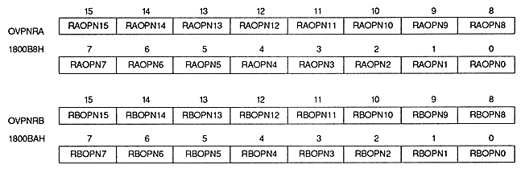

| RAOPN15 ~ RAOPN0 | 1800B8H | bits 15-0 | For rotation parameter A |
| RBOPN15 to RBOPN0 | 1800BAH | bits 15 to 0 | For rotation parameter B |
The bit configuration is the same as when the pattern name table data size is 1 word, and changes depending on the character size, number of character colors, and character number auxiliary mode settings.
∙ This register is used for the scroll screen with the rotation parameter A and the scroll screen with the rotation parameter B, but the character size and character number auxiliary mode that determines the bit configuration is for RBG0 and RBG1. Therefore, be careful when displaying the screen with rotation parameter A and rotation parameter B on RBG0 at the same time.